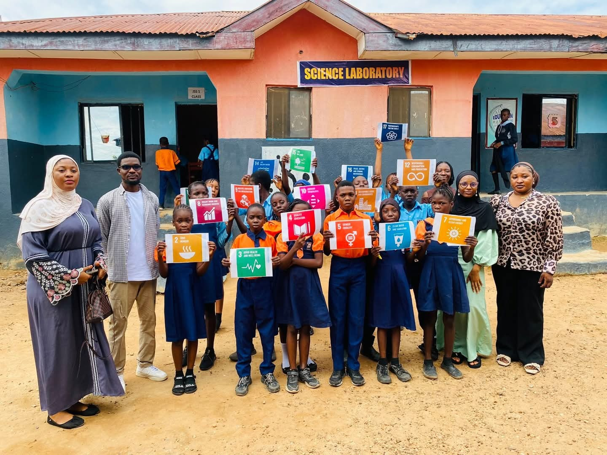
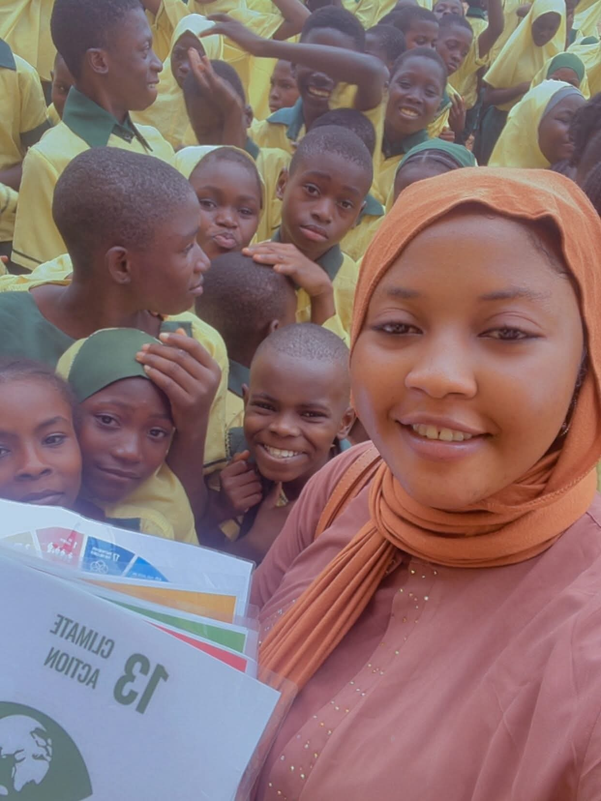

Our Programmes
Six interconnected programme areas, delivered through community-led, evidence-based interventions across Nigeria.

Girls' Education & Leadership
We champion girls' right to quality education and nurture the next generation of women leaders. Our work includes school enrolment and retention support, mentorship circles, leadership bootcamps, and confidence-building programmes that help girls find and use their voice.
What this includes: Mentorship, School support, Leadership training
Support this programme →
Youth Development & Empowerment
We equip young people with the skills, networks and opportunities to thrive through skills acquisition, career guidance, civic engagement, volunteering pathways and youth leadership development that tackles unemployment and builds active citizens.
What this includes: Skills acquisition, Civic engagement, Employability
Support this programme →
Public Health Promotion
Led by public health professionals, we deliver community health education, hygiene and sanitation campaigns, disease-prevention awareness, and adolescent health programmes that put life-saving knowledge in people's hands.
What this includes: Health education, WASH, Adolescent health
Support this programme →
Climate Action & Environmental Sustainability
From SDG 13 sensitization in schools to tree planting, waste management campaigns and climate-resilience education, we grow a generation of environmental stewards who protect our planet.
What this includes: SDG 13, Climate education, Tree planting, Environmental stewardship
Support this programme →Community Development & Social Inclusion
We design community-driven projects that leave no one behind, reaching vulnerable communities and persons with disabilities with inclusive programmes that strengthen local capacity and social cohesion.
What this includes: Inclusion, Disability rights, Community projects
Support this programme →Policy, Research & Advocacy
We generate evidence and amplify community voices to influence policy on gender equality, youth development, public health and climate action, engaging decision-makers at local, state and national levels.
What this includes: Research, Policy engagement, Advocacy campaigns
Support this programme →Support a programme
Your donation or partnership can put a girl in school, train a young leader, or bring climate education to a whole community.